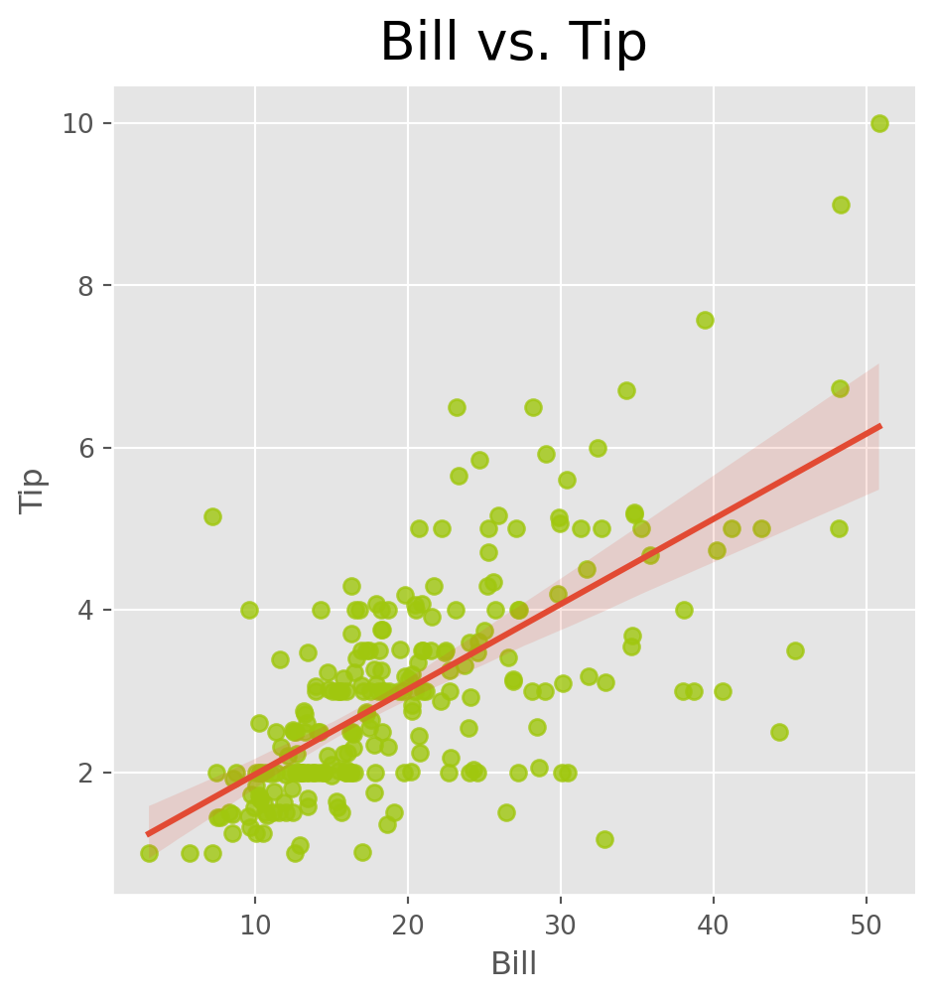

### Load relevant packages
import pandas as pd
from scipy import stats
import numpy as np
import matplotlib.pyplot as plt
import seaborn as sns
import statsmodels.formula.api as sm
# import chart_studio.plotly as py
# https://community.plot.ly/t/solved-update-to-plotly-4-0-0-broke-application/26526/2
import os
%matplotlib inline
plt.style.use('ggplot')11 Linear Regression I
In Case 11 we introduced linear regression. You should understand the working components of a linear regression model such as interpreting the coefficients and understanding various metrics to properly evaluate the performance of the regression model.
11.1 Preliminary modules
Linear regression is concerned with the following problem: Suppose that \(X\) and \(Y\) are some attributes of a population. What is the relationship between \(X\) and \(Y\)? How can we use \(X\) to predict \(Y\), or how can we use \(X\) to explain \(Y\)?
For example, questions of this form include:
- How is location, square feet, parking available related to the price of an Airbnb?
- How is hours played and age related to win rate in League of Legends?
- How are creatine and protein consumption related to deadlift 1RM?
- How is treatment (A or B) related to pain levels of patients?
11.2 Simple linear regression
Simple linear regression is when we are trying to find the line of best fit between one variable \(X\) and another \(Y\). A line has two parameters – intercept (\(\beta_0\)) and slope (\(\beta_1\)). Thus a linear model for the relationship between one variable \(X\) and another \(Y\) can be represented as \[ Y = \beta_0 + \beta_1 X + \text{error} .\]
The model says that any subjects value of \(X\) and \(Y\) can be represented as \(Y = \beta_0 + \beta_1 X + \text{error}.\) The interpretation of the coefficient \(\beta_1\) is the following: an increase of one unit in \(X\) will on average lead to a change of \(\beta_1\) in \(Y\). The intercept \(\beta_0\) can be thought of as a sort of “baseline” - it is the average value of \(Y\) when \(X=0\). The error is the individual variation around the average. For instance, we can use the tips dataset as an example. We can plot the line of best fit using sns.lmplot().
tips=sns.load_dataset("tips")
sns.lmplot(x = 'total_bill', y = 'tip', data = tips, scatter_kws = {'color': (160/255,199/255,14/255)})
plt.title("Bill vs. Tip", fontsize=20, verticalalignment='bottom')
plt.xlabel("Bill")
plt.ylabel("Tip")Text(33.775000000000006, 0.5, 'Tip')
Notice how the line represents the average value of the tip given the bill? The points do not exactly fall on the line, they vary around it. This variation is the error term in the above model. The intercept and slope of the line are the estimates of \(\beta_0\) and \(\beta_1\).
Note
Just like in the hypothesis testing case, we have to distinguish between a population and a sample. In this case, the parameters \(\beta_0\) and \(\beta_1\) are the population values which are unknown. In reality, we have a sample from the population and use the sample to estimate \(\beta_0\) and \(\beta_1\), given by \(\hat\beta_0\) and \(\hat\beta_1\).
A residual is the difference between an actual observed value of \(Y\) and the one predicted by the linear regression line \(\hat Y\). That is, \(\hat\epsilon_i=Y_i-\hat Y_i\). It is the signed error between the observed and the value guessed by the line.
We can estimate the parameters \(\beta_0\) and \(\beta_1\) as follows
tips.head()
model= 'tip~total_bill'
lm1 = sm.ols(formula = model, data = tips).fit()
print(lm1.summary()) OLS Regression Results
==============================================================================
Dep. Variable: tip R-squared: 0.457
Model: OLS Adj. R-squared: 0.454
Method: Least Squares F-statistic: 203.4
Date: Mon, 22 Jul 2024 Prob (F-statistic): 6.69e-34
Time: 13:26:02 Log-Likelihood: -350.54
No. Observations: 244 AIC: 705.1
Df Residuals: 242 BIC: 712.1
Df Model: 1
Covariance Type: nonrobust
==============================================================================
coef std err t P>|t| [0.025 0.975]
------------------------------------------------------------------------------
Intercept 0.9203 0.160 5.761 0.000 0.606 1.235
total_bill 0.1050 0.007 14.260 0.000 0.091 0.120
==============================================================================
Omnibus: 20.185 Durbin-Watson: 2.151
Prob(Omnibus): 0.000 Jarque-Bera (JB): 37.750
Skew: 0.443 Prob(JB): 6.35e-09
Kurtosis: 4.711 Cond. No. 53.0
==============================================================================
Notes:
[1] Standard Errors assume that the covariance matrix of the errors is correctly specified.There is a lot of output contained in the linear regression model output. First, the column coef gives \(\hat\beta_0\) and \(\hat\beta_1\). We interpret the coeficient for total bill as: on average, we expect the tip to increase by 0.1050 for each dollar increase in total bill.
The column P>|t| displays the \(p\)-values for the test \(H_0\colon \beta_i=0\) vs \(H_a\colon \beta_i\neq 0\). If a coefficient is 0 theoretically, that means that the associated variable is not related to the response variable \(Y\). For instance, if the coefficient for total bill was 0, then that implies that the value of the bill does not impact the tip amount. So, if this \(p\)-value is not small, it is an indication that there is no relationship between total bill and tip. In the intercept \(p\)-value is small, then this means that the intercept is 0. In this case, both \(p\)-values are very small, and so both parameters are important.
Another quantity you will see is the \(R\)-squared. Note that the table shows \(R\)-squared and adjusted \(R\)-squared - if you have many variables, then you should use the adjusted \(R\)-squared. Both of these quantities are always going to be between 0 and 1. For the tips data, this quantity is 0.457 = 45.7%. This means that the total bill explains 45.7% of the variation in tips. The remaining 55% is due to other, unknown factors. The higher the (adjusted or non-adjusted) \(R\)-squared, the higher the percentage of observed variation that can be explained by the model.
11.3 Multiple linear regression
Multiple linear regression consists of a linear model with \(p>1\) variables. The theoretical model is given by
\[Y = \beta_0 + \beta_1 X_1+ \beta_2 X_2+\ldots+ \beta_p X_p + \mathrm{error}.\]
In Python, we can add another variable to the model as follows:
model2= 'tip~total_bill+sex'
lm2 = sm.ols(formula = model2, data = tips).fit()
print(lm2.summary()) OLS Regression Results
==============================================================================
Dep. Variable: tip R-squared: 0.457
Model: OLS Adj. R-squared: 0.452
Method: Least Squares F-statistic: 101.3
Date: Mon, 22 Jul 2024 Prob (F-statistic): 1.18e-32
Time: 13:26:02 Log-Likelihood: -350.52
No. Observations: 244 AIC: 707.0
Df Residuals: 241 BIC: 717.5
Df Model: 2
Covariance Type: nonrobust
=================================================================================
coef std err t P>|t| [0.025 0.975]
---------------------------------------------------------------------------------
Intercept 0.9067 0.175 5.182 0.000 0.562 1.251
sex[T.Female] 0.0266 0.138 0.192 0.848 -0.246 0.299
total_bill 0.1052 0.007 14.110 0.000 0.091 0.120
==============================================================================
Omnibus: 20.499 Durbin-Watson: 2.149
Prob(Omnibus): 0.000 Jarque-Bera (JB): 38.652
Skew: 0.447 Prob(JB): 4.05e-09
Kurtosis: 4.733 Cond. No. 63.0
==============================================================================
Notes:
[1] Standard Errors assume that the covariance matrix of the errors is correctly specified.The above model takes bill total and sex into account simultaneously. Sex takes only two values – male and female. Such variables are called categorical variables. The way we interpret the coefficients of categorical variables in the linear model is slightly different from those of numeric variables.
Each categorical variable in a regression model includes a baseline category. To figure out the baseline category, it is the one missing from the table in the regression output. In this case, male is missing, so it can taken to be the baseline. The interpretation of the coefficient sex[T.Female] is that, accounting for total bill, the average tip from a female is 0.0266 higher than from a male. (Note that this coefficient is not significant - does not have a small p-value - and so there is no evidence that the tips from males and females differ, after accounting for total bill.)
Let’s make a bigger model:
model3= 'tip~total_bill+sex+smoker+day+time+size'
lm3 = sm.ols(formula = model3, data = tips).fit()
print(lm3.summary()) OLS Regression Results
==============================================================================
Dep. Variable: tip R-squared: 0.470
Model: OLS Adj. R-squared: 0.452
Method: Least Squares F-statistic: 26.06
Date: Mon, 22 Jul 2024 Prob (F-statistic): 1.20e-28
Time: 13:26:02 Log-Likelihood: -347.48
No. Observations: 244 AIC: 713.0
Df Residuals: 235 BIC: 744.4
Df Model: 8
Covariance Type: nonrobust
==================================================================================
coef std err t P>|t| [0.025 0.975]
----------------------------------------------------------------------------------
Intercept 0.5908 0.256 2.310 0.022 0.087 1.095
sex[T.Female] 0.0324 0.142 0.229 0.819 -0.247 0.311
smoker[T.No] 0.0864 0.147 0.589 0.556 -0.202 0.375
day[T.Fri] 0.1623 0.393 0.412 0.680 -0.613 0.937
day[T.Sat] 0.0408 0.471 0.087 0.931 -0.886 0.968
day[T.Sun] 0.1368 0.472 0.290 0.772 -0.793 1.066
time[T.Dinner] -0.0681 0.445 -0.153 0.878 -0.944 0.808
total_bill 0.0945 0.010 9.841 0.000 0.076 0.113
size 0.1760 0.090 1.966 0.051 -0.000 0.352
==============================================================================
Omnibus: 27.860 Durbin-Watson: 2.096
Prob(Omnibus): 0.000 Jarque-Bera (JB): 52.555
Skew: 0.607 Prob(JB): 3.87e-12
Kurtosis: 4.923 Cond. No. 281.
==============================================================================
Notes:
[1] Standard Errors assume that the covariance matrix of the errors is correctly specified.We observe that size and total_bill are the only important variables in explaining tips, even when accounting for all other variables.
Important
When there are multiple variables in the model, the interpretation of the coefficients changes. It has to include “accounting for the remaining variables in the model, …”. For example, above, we can interpret the coefficient for total bill as: “Accounting for size, sex, smoking, time and day, the average increase in tips per dollar increase in total bill is 0.0945.”
Important
Notice that in the above interpretation, we say average increase. This is very important. The model does not say that a dollar increase in total bill will increase tips by 0.0945. It says that on average, that is what we would expect. But it is not for certain that each dollar increase will increase your tip. In reality, some people tip higher, some people tip lower. The model is saying that these average out to a 0.0945 increase per dollar.
11.4 Python syntax for regression
The following is an overview of the Python syntax for regression for building a regression model.
- To do linear regression in Python, we need to import the library from
statsmodels:import statsmodels.formula.api as smf. - Next, we use a formula object to define the variables in our model. The intercept is included by default. Define the formula object:
formula = 'dependent_variable ~ independent_variable1 + independent_variable2 + ...'. The names should match up with the column names in the DataFrame. - To fit the model, we use the following syntax:
model = smf.ols(formula, data=data).fit(). Heredatais the DataFrame name. - To print the summary of the regression results:
print(model.summary())